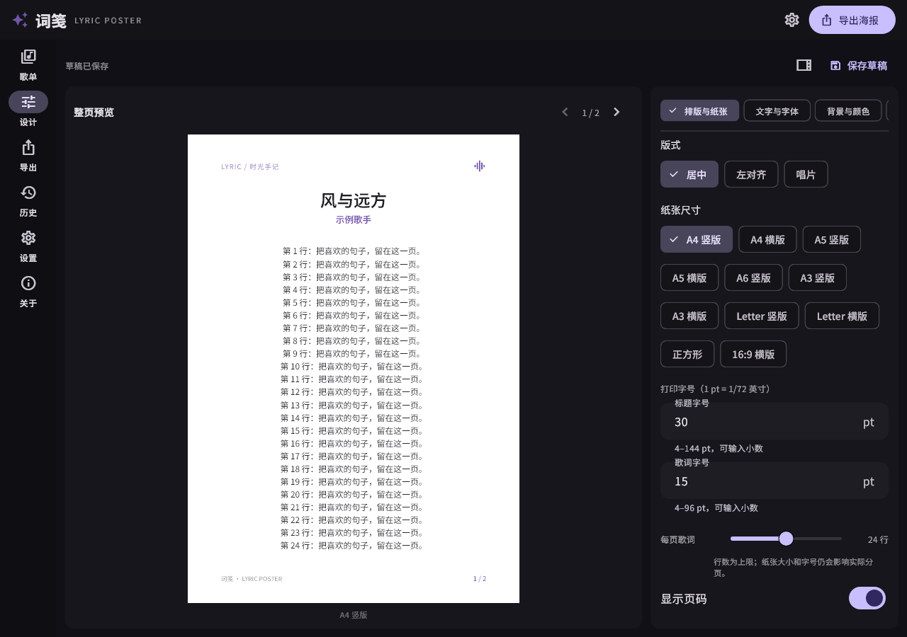

01
歌单导入，也能搜歌
粘贴网易云公开歌单链接，保留歌曲顺序。也可搜索歌曲，或手动输入自己的文字。
从一首歌，到一张属于你的歌词海报。
导入歌单，细调字体与颜色，让完整歌词
以舒适的版式，走出屏幕。
Windows & Android · 免费开源 · MIT License
LYRIC POSTER · 词笺
把一行清晨折进纸里
把一片晚霞留给自己
当旋律轻轻停在这里
字与光，还在继续
给此刻，一个温柔的注脚
字有形，喜欢有迹。
点击海报开始编辑，在常驻侧栏调整参数，实时查看打印版面。

电脑侧栏编辑 · 手机工具停靠 · 预览与导出共用版面
把排版交给工具，把风格留给你。
粘贴网易云公开歌单链接，保留歌曲顺序。也可搜索歌曲，或手动输入自己的文字。
分别设置标题、歌词的 pt 字号，调整每页行数。导入自己的 TTF / OTF 字体，固定打印版式。
白纸开场，调色盘与常用色随手切换。拖动、缩放背景图，再加一张喜欢的贴纸。
自定义海报顶部和底部的文字，也可分别隐藏。标题只出现在第一页，让后续歌词更从容。
A3 / A4 / A5 / A6、Letter 与多种画幅。自动分页，导出 300 DPI PNG 或多页 PDF。
历史记录保存导入歌单与海报草稿。找回文字、字体、背景和图片位置，从上次停下的地方继续。
粘贴公开歌单，搜索歌曲，或直接写下自己的歌词。
选择纸张，设置字号、颜色和背景。边调整，边预览。
保存 PNG 或完整的多页 PDF，放进手帐，或贴在墙上。
前往 GitHub Releases，选择适合你的平台。
Windows 需完整解压 ZIP 后运行 · Android 安装 APK
本页为介绍与下载入口，海报在应用内编辑。